How Do You Talk to a Simulated Car?
Toolchain: Python, Linux and CARLA
Zachary D. Asher, PhD
ME 4650/5950 Vehicle Dynamics & Control
Lecture 1B, Wednesday, January 13, 2027
This handout is the notes for the lecture. Write your work in the boxes and blanks. Group-example solutions are posted on eLearning after class, and quiz problems look like them.
© 2027 Zachary D. Asher, CC BY 4.0. Credits and licenses: github.com/AD-Assurance-Lab/vehicle-dynamics, file lectures/wk01-point-mass/README.md. The WMU logo is a registered trademark of Western Michigan University and is not covered by this license.
No laptops today. Everything runs on the slides or at the podium; you work on paper. Every screen in this lecture is a real screenshot of the course USB drive, or drawn to look like one.
From your keyboard to the car and back
Tell them what you will tell them, one click at a time: the whole path from a key you press to a car that brakes, and the data coming back. First Linux, the operating system: everything today runs inside it. Ubuntu is one distribution of Linux. Then the terminal and VS Code, where you type; then Python; then CARLA, the simulator, with Python talking straight to it. At the red X, ask what is wrong: Python knows numbers and loops, not cars. Then CARLA slides over and the Python API appears inside Python: the commands CARLA understands, loaded with import carla. The next slide explains what an API is.
What is an API? Think of a waiter
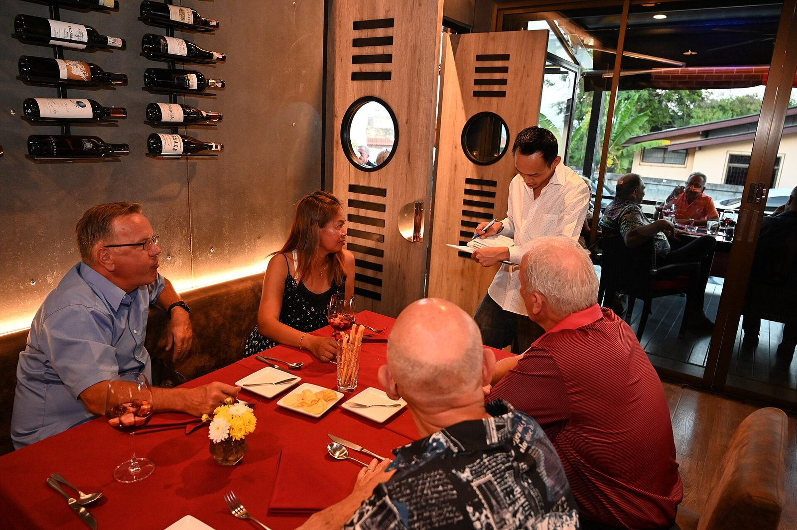
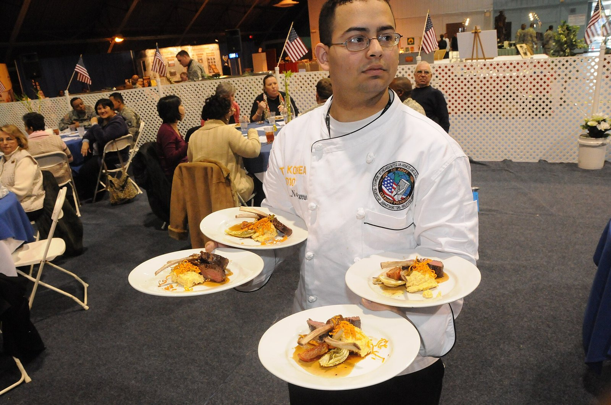
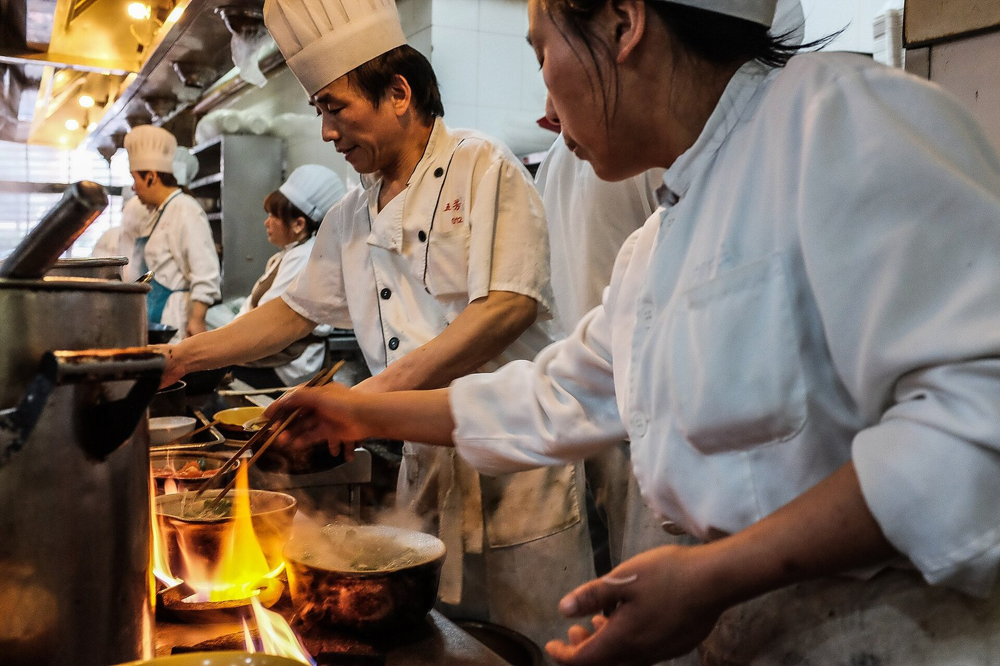
Application Programming Interface (API): the go-between that takes requests from one program to another and brings back the answers. Like a waiter, it takes only orders on its menu, and you never go into the kitchen.
A short detour. At a restaurant you do not walk into the kitchen and cook. You read the menu, tell the waiter, and the waiter brings back your food. Click Place an order: the order goes to the kitchen and the plate comes back. Then the click that maps it: your script is the diner, the Python API is the waiter, CARLA is the kitchen. The menu is the list of requests CARLA accepts: place a car, drive it, tell me its speed. Click Place an order again: now the same trip carries real API calls. You never see how CARLA computes the physics, just as you never see the stove.
From your keyboard to the car and back
Back to the map, API in place. One click for where the course goes after this week: ROS 2. With ROS 2, CARLA publishes its sensors on topics and takes driving commands from a topic, so your driving code makes no API calls. One setup step still uses the API to place the car and its sensors; after that, everything goes over topics. The last slide today comes back to ROS 2.
Part 1: Linux
First the box everything runs in. Today only two parts of it: the desktop and the terminal.
Linux: the system under CARLA
The lab computers start Ubuntu Linux from the course USB drive.
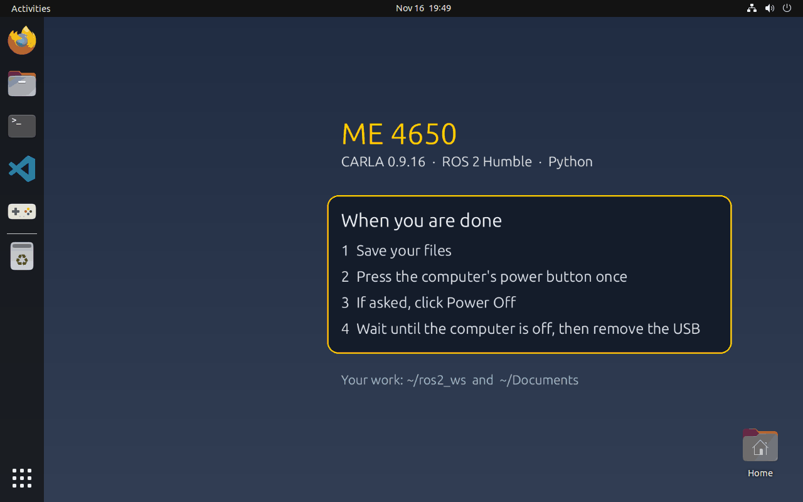
Files Terminal VS Code CARLA- An operating systemlike Windows or macOS, but free
- Ubuntu 22.04one distribution of Linux
- Built for robotsCARLA and ROS 2 run on it
Start with the video: open a terminal from the dock. You do not install anything. Your work lives on the drive in your home folder. The kernel is the core of Linux that talks to the hardware; a distribution such as Ubuntu is the kernel plus everything around it. Engineers use Linux because it runs for days without a restart and because the terminal does exactly what you type. Shut down with the power button, then pull the drive.
The terminal
The prompt student@me4650:~/lab1$ reads: who (student), which computer (me4650), which folder (~/lab1), ready ($).
| Command | What it does |
|---|---|
| pwd | print the folder you are in |
| ls | list what is in it |
| cd name | go into a folder; cd .. goes up one; ~ is your home folder |
| mkdir name | make a folder |
| touch name | make an empty file |
| echo "text" > file | write text into a file |
| cat file | show a file |
| python3 file.py | run a Python program |
| code . | open this folder in VS Code |
| Tab, ↑, Ctrl+C | finish a name, last command, stop a program |
Read the prompt first: who, which computer, which folder, ready. Then click the demo button to walk through pwd, ls, mkdir, cd, touch, echo, cat and python3, or type your own. The gold folder is where you are; it moves with every cd. The folders match the real USB drive. This is a simulation; nothing runs on the classroom computer. The commands are in a table in the handout.
Write the commands
You are in your home folder. Write the command for each step.
| Step | Command |
|---|---|
1. Make a folder brake_test | m |
| 2. Go into it | c |
3. Make an empty file stop.py | touch stop.py______________ |
4. Put print("Stopped!") in it | echo 'print("Stopped!")' > stop.py______________ |
| 5. Show the file | |
| 6. Run it | python3 stop.py______________ |
| ▲ You can run Python programs this way, all in the terminal. We will use VS Code instead. | |
| 7. Go back up one folder | cd ..______________ |
Then type the answers into the terminal slide to check them. Step 4: wrap the Python in single quotes so the double quotes inside reach the file. In the lab you would open stop.py in VS Code instead of using echo. mkdir, cd and cat first appear as the words they stand for: make directory, change directory, concatenate (cat joins files; with one file it just shows it). cd .. goes up one folder; here that is home.
The terminal starts your programs
Type a program's name and press Enter.
$ code .
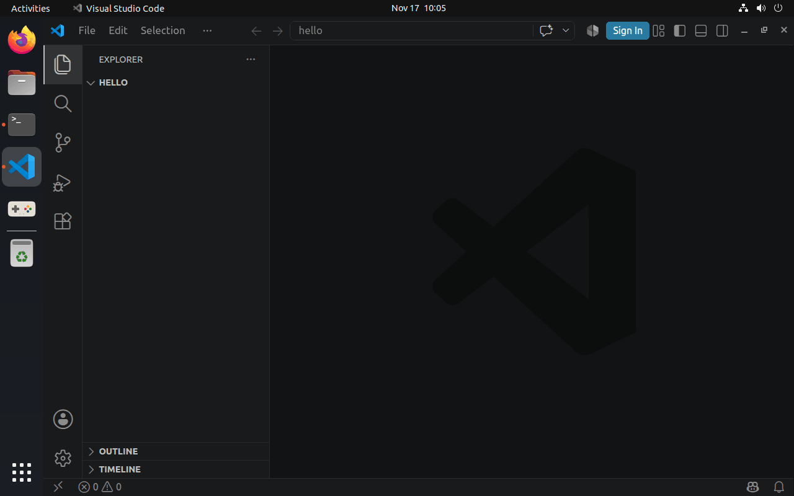
$ carla
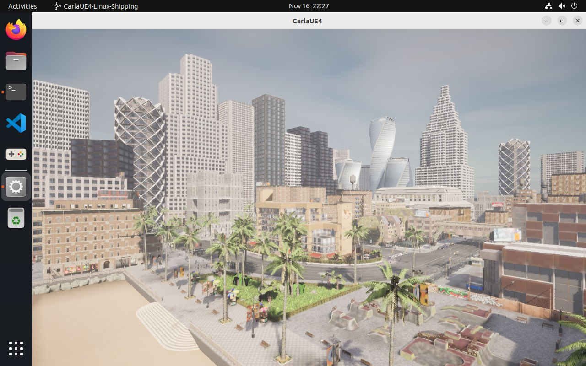
carla is the course drive's shortcut for /opt/carla/CarlaUE4.shThis closes the Linux part and opens the next two. code . opens VS Code in the folder you are in; the dot means this folder. carla starts the simulator and keeps that terminal busy while it runs, so scripts go in a second terminal. Both screens are real, from the course drive.
Part 2: Python and its API
Next the language, written in VS Code, and the API that lets it talk to CARLA.
Terminal or VS Code?
Terminal talk to the computer
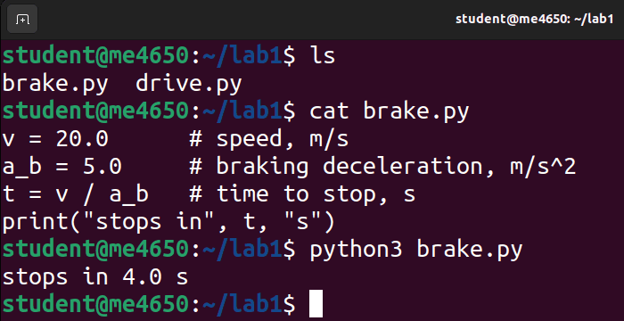
- One command per line
- Runs when you press Enter
VS Code write a file you keep
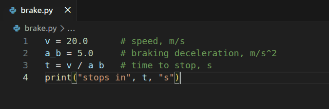
- Python, saved in a
.pyfile - Runs only after you save and run it
VS Code's TERMINAL panel is a real terminal too: same commands, same rules.
These are the real windows on the USB drive. From here on, every code box looks like one of these two: dark purple with a prompt is the terminal; dark gray with a file tab and line numbers is VS Code. A command acts right away, and a folder or file it makes stays on the drive. A dot on the VS Code tab means the file is not saved yet. Most confusion in the first lab is typing into the wrong window.
Hello, world: write, save, run
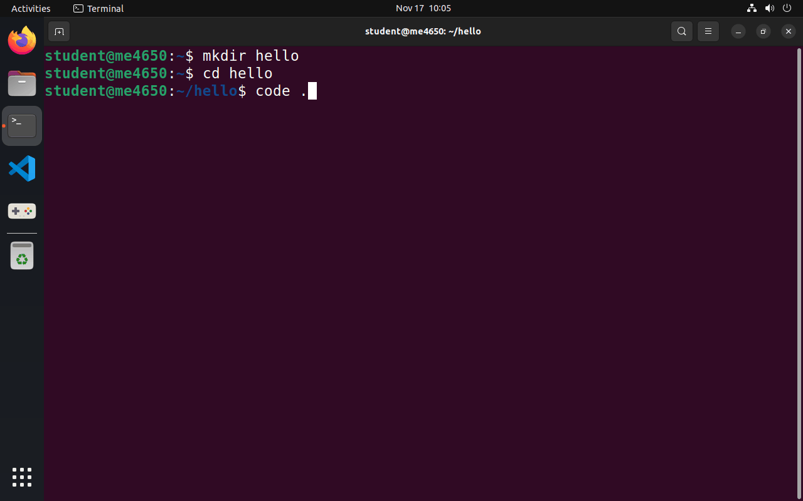
Make a folder, go in, open it in VS Code:
code .The folder opens on the left. Empty.
New File:
hello.pyType one line.
Dot on the tab: not saved.
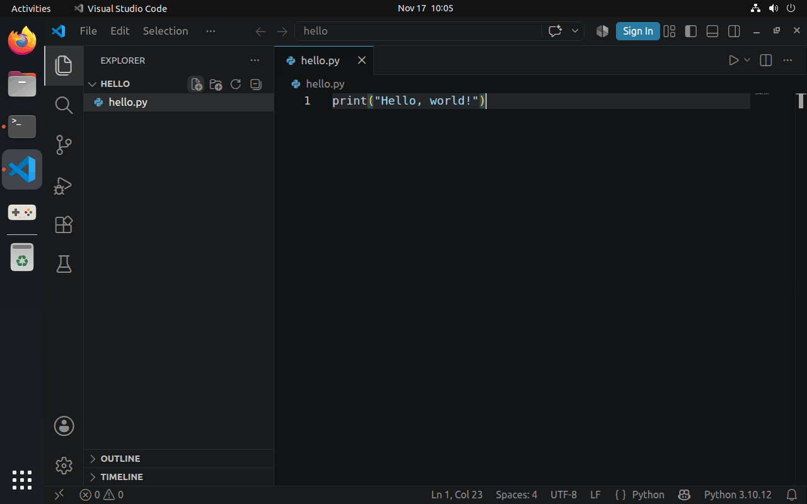
Ctrl+S saves.The dot becomes ×.
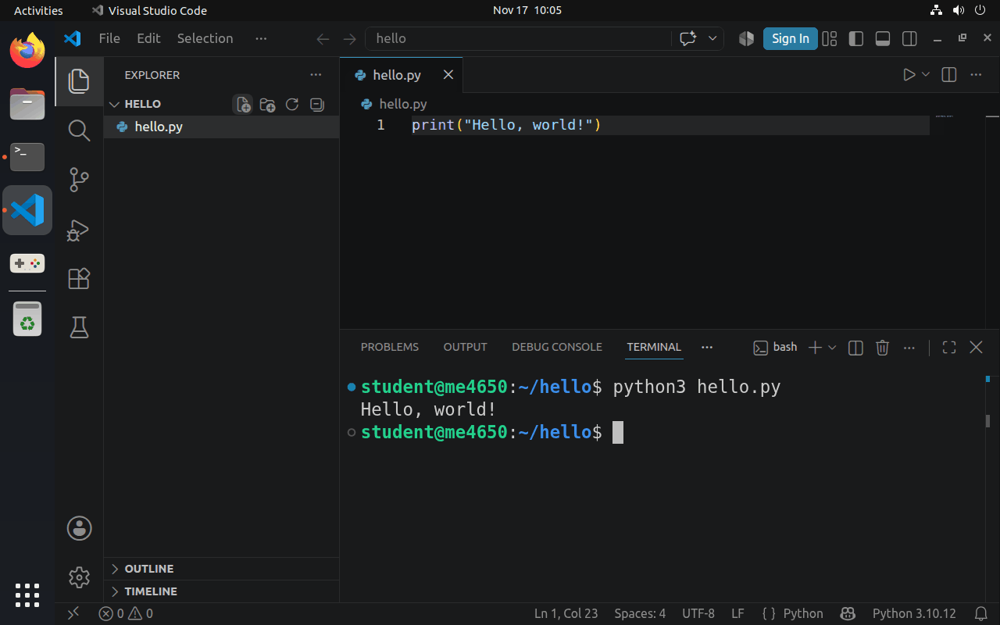
Open the panel:
Ctrl+`Run:
python3 hello.pyThe classic first program. Start with the video, then click through: each click is the next real screen. Point at the window title bar each time: Terminal or Visual Studio Code. The dot in code . means this folder. Ctrl+` is Control and the backtick key, top left under Esc. The unsaved dot catches people every year: an unsaved file runs the old version. The course drive also saves a file when you click away from it, but Ctrl+S is the habit to build.
Where does it go?
Write T for the terminal
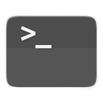
or V for a Python file in VS Code .Two minutes with a neighbor. Two traps: code . is the command that opens VS Code, and carla on its own line is the command that starts the simulator. Lowercase carla after import is the Python library. If a group is stuck: a command starts with a program name; Python has =, import and colons.
Python, if you know MATLAB
| To do this | MATLAB | Python |
|---|---|---|
| Comment | % speed in m/s | # speed in m/s |
| Power | v^2 | v**2 |
| Arrays and math | (built in) | import numpy as np |
| Array | v = [10 20 30] | v = np.array([10, 20, 30]) |
| First element | v(1) | v[0] |
| Loop 5 times | for i = 1:5 disp(i) end | for i in range(5): print(i) (i = 0 to 4) |
| Function | function y = f(x) y = 2*x; end | def f(x): y = 2*x return y |
Python counts from 0, and indentation decides what is inside a loop or function.
Python is the language of robotics and AI tools, and it is how you talk to CARLA and ROS 2. np is the usual short name for NumPy, the array library; plt for Matplotlib, the plotting library.
Variables and arrays: names on boxes
import numpy as np mass = 1200 # int (kg) speed = 25.5 # float (m/s) model = "MKZ" # str: text abs_on = True # bool speeds = np.array([10, 20, 30]) print(mass * speed) print(speeds[0], speeds * 3.6)
Each variable is a labeled box: mass holds 1200, an int; speed holds 25.5, a float; model holds the text MKZ, a str; abs_on holds True, a bool. The array speeds is a row of three boxes holding 10, 20 and 30 at indexes 0, 1 and 2.
What is the type of each variable?
gear = 3int________fuel_economy = 14.2float________headlights_on = Truebool________
How do you run car.py? Terminal python3 car.py______________
What does it print?
$ python3 car.py 30600.0 10 [ 36. 72. 108.]
A variable is a name stuck on a box. int is a whole number, float a decimal, str text in quotes, bool True or False. First click: the boxes. Then the three types, one click each. Then how to run it: python3 car.py in a terminal, or in VS Code's TERMINAL panel. Then the output: an int times a float gives a float, hence 30600.0. A NumPy array does math on every element in one line: times 3.6 converts all three speeds to km/h.
Functions and loops
def time_to_stop(v0, a_b):
t = v0 / a_b
return t
print(time_to_stop(30.0, 7.5))
def names it
indented lines do the work
return hands back the answer
call it
$ python3 stop.py 4.0
def names the function and its inputs. The indented lines do the work. return hands back the answer.
for i in range(3):
print("tick", i)
v = 9.0
while v > 0:
v = max(v - 4.0, 0.0)
print(v)
$ python3 loop.py tick 0 tick 1 tick 2 5.0 1.0 0.0
One click per label: def names the function and lists its inputs, the indented lines do the work, return hands back the answer, and the last line calls it with numbers. Time to stop comes from v = v0 − a_b t with v = 0. Then the output. The colon and the indent mark what repeats. for repeats a fixed number of times; while checks its condition before every pass. max picks the larger of two numbers, so v never goes below zero.
Be the computer
v = 20.0 # speed, m/s a_b = 6.0 # braking, m/s^2 dt = 1.0 # time step, s t = 0.0 while v > 0: t = t + dt v = max(v - a_b * dt, 0.0) print(t, v) print("stopped after", t, "s")
- What does each pass print?
- On which pass does
maxmatter? - With
dt = 0.5, how many passes?
Work it on the board first, then step through it here to check. One click runs one line: the gold bar is the line about to run, and the box that just changed turns gold. A table on the board helps: pass, t, v, printed. Passes: t = 1, 2, 3, 4 and v = 14, 8, 2, 0, so it prints 1.0 14.0, 2.0 8.0, 3.0 2.0, 4.0 0.0, then stopped after 4.0 s. max matters on pass 4: 2 − 6 = −4, so v becomes 0. With dt = 0.5, v drops 3 per pass: 17, 14, 11, 8, 5, 2, 0, seven passes.
Plotting with Matplotlib
import numpy as np
import matplotlib.pyplot as plt
time = np.arange(11) # 0 to 10 s
speed = np.array([0, 10, 25, 35, 50, 55,
60, 55, 45, 30, 0])
plt.plot(time, speed, marker="o",
label="Speed") # 1
plt.title("Vehicle Speed Over Time") # 2
plt.xlabel("Time (s)") # 3
plt.ylabel("Speed (km/h)") # 4
plt.legend() # 5
plt.grid(True) # 6
plt.show()
np: NumPy, arrays and math
plt: plots
np is NumPy, the array library; plt is Matplotlib's plotting part.
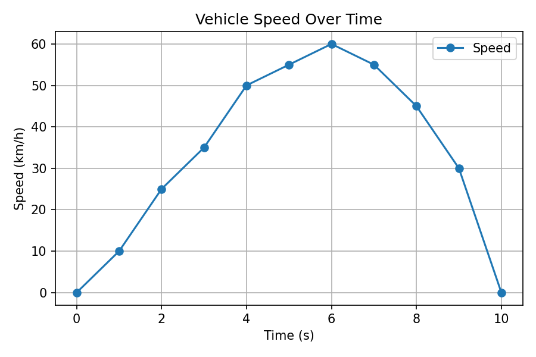
1 2 3 4 5 6Each numbered line draws the part with the same number. plt.show opens the window. Always label axes with units: you cannot debug what you cannot see.
Write it by hand: a braking car
A car at 72 km/h brakes at a constant 4 m/s². Fill in the blanks so the program:
- converts 72 km/h to m/s with a function
- finds the speed every 1 s until it stops, kept in lists
- plots speed against time, axes labeled
- Sketch the plot you expect.
- 1 m/s = 3.6 km/h.
- The loop runs as long as the car still moves.
- Each pass, the speed drops by
a_btimes 1 s, and never below zero. - Each axis label names the quantity and its unit.
import matplotlib.pyplot as plt
def kmh_to_ms(speed_kmh):
return ______________
v = kmh_to_ms(72) # m/s
a_b = 4.0 # m/s^2
t = 0.0
times = [t]
speeds = [v]
while ______________:
t = t + 1.0
v = ________________________
times.append(t)
speeds.append(v)
plt.plot(times, speeds, marker="o")
plt.xlabel(______________)
plt.ylabel(______________)
plt.show()
Hand out the scaffold; groups fill the blanks. Click a hint only when a group is stuck. The point is not the syntax: in the labs they may write code with an AI assistant, and this is what they need to read its code and check it. Answers: speed_kmh / 3.6; while v > 0; v = max(v - a_b * 1.0, 0.0); "Time (s)" and "Speed (m/s)". The plot is a straight line from 20 m/s at 0 s to 0 at 5 s. Other right answers exist: check that the loop stops at zero and the axes have units.
The CARLA API: the menu
✦ Café CARLA ✦
Served by import carla: the requests CARLA accepts
To start
- connect
client = carla.Client("localhost", 2000) - hand over the world
world = client.get_world() - a fixed time step
settings.fixed_delta_seconds = 0.05
Main course
- place a car
car = world.spawn_actor(bp, spot) - drive it
car.apply_control(carla.VehicleControl(throttle=1.0)) - move time one step
world.tick()
To finish
- tell me its speed
car.get_velocity().length()
Each line is one order to the waiter: on the left what you want, on the right how you say it in Python. localhost and 2000 say where CARLA listens: this computer, door 2000; the CARLA part explains. A fixed time step makes time move only when the script calls tick. bp is a blueprint, the recipe for the car; spot is a place on the map. A control is throttle 0 to 1, steer −1 to 1, brake 0 to 1. Spawn means place an actor in the world. The next slide puts these lines in order.
A CARLA script, line by line
import carla
client = carla.Client("localhost", 2000)
world = client.get_world()
settings = world.get_settings()
settings.synchronous_mode = True
settings.fixed_delta_seconds = 0.05
world.apply_settings(settings)
bp = world.get_blueprint_library().find("vehicle.lincoln.mkz_2020")
spot = world.get_map().get_spawn_points()[0]
car = world.spawn_actor(bp, spot)
spectator = world.get_spectator() # the camera of the CARLA window
for i in range(100):
car.apply_control(carla.VehicleControl(throttle=1.0))
world.tick()
view = car.get_transform() # watch from behind the car
view.location += view.get_forward_vector() * -8 + carla.Location(z=3)
view.rotation.pitch = -10
spectator.set_transform(view)
print(car.get_velocity().length())
Lines 3 to 4: connect, get the world. 5 to 8: a fixed time step, 0.05 s per tick. 9 to 12: place a car, get CARLA's camera. 13 to 15: drive, 100 ticks = 5 s. 16 to 19: only to watch, the camera follows the car. 20: the speed in m/s.
One box per click. Connect to CARLA and get its world. Fix the time step: synchronous mode means time moves only when the script calls world.tick, 0.05 s each, so every run gives the same answer. Place a car: find its blueprint, take the first spawn spot on the map, spawn it; the spectator is the camera of the CARLA window. Drive: full throttle for 100 ticks of 0.05 s, 5 s of simulated time. The four camera lines only move CARLA's view 8 m behind and 3 m above the car so you can watch; the car drives the same without them. Last, the speed: get_velocity returns a vector; length gives its size, in m/s. Dots read left to right: world.get_map().get_spawn_points()[0] is the world's map, its list of starting spots, the first one.
Part 3: CARLA
Now the other side of the API: the simulator itself.
CARLA: a server and your script
CARLA runs the world. Your script asks it to do things.
Linux: both run on one computer
Your Python script (client)
uses the Python API to place a car, drive it and read results
import carla
client = carla.Client("localhost", 2000)port 2000
CARLA server
roads, weather, cars, physics. Start it first: carla
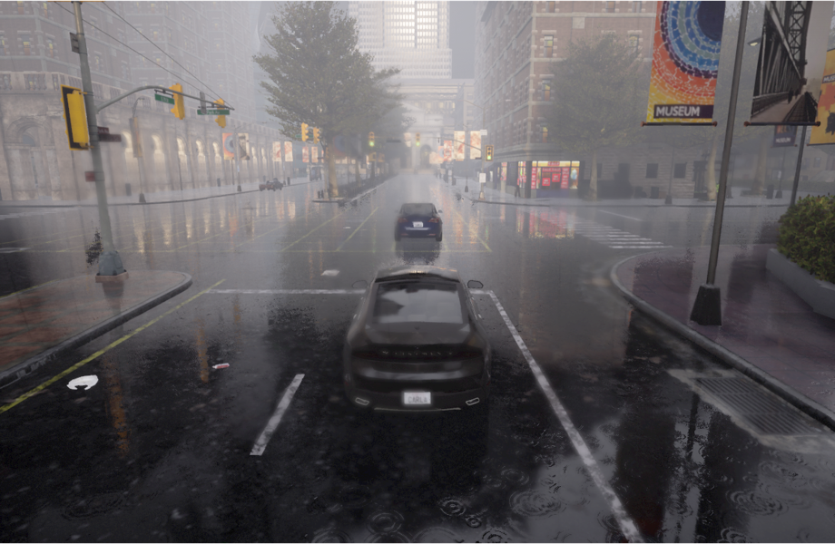
Your script sends commands to the CARLA server, such as apply_control and tick, and reads data back, such as the car's speed, over port 2000 on the same computer.
A server is a program that waits for requests; a client is a program that sends them. Start the server once with the carla command in its own terminal and leave it running. localhost means this same computer; port 2000 is the door CARLA listens on. With a fixed tick, the simulation only moves when your script says so, so every run gives the same answer.
Part 4: All together
Every box at once: start CARLA, write a script, run it, watch the car.
Putting it all together
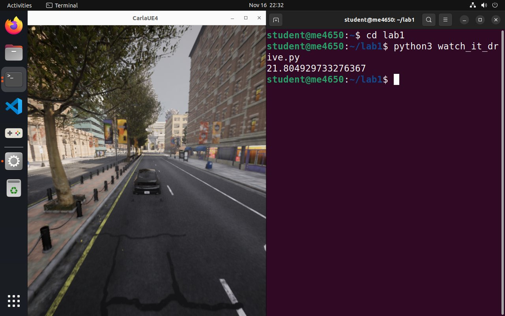
- Terminal 1
carlastart the world, leave it running - VS Code write
watch_it_drive.py,Ctrl+Sconnect, spawn, drive, read - Terminal 2
cd lab1, thenpython3 watch_it_drive.pya second terminal:Ctrl+Alt+T - CARLA watch the carPython prints the speed in m/s
Every part of the map in one run. Start with the video: CARLA on the left half, a second terminal on the right, the script drives the car and prints its speed. The script is watch_it_drive.py, the one read line by line. Full throttle for 100 ticks of 0.05 s, 5 s of simulated time, reaches 21.8 m/s.
Bug hunt
Real errors from the USB drive. Which window? What is the fix?
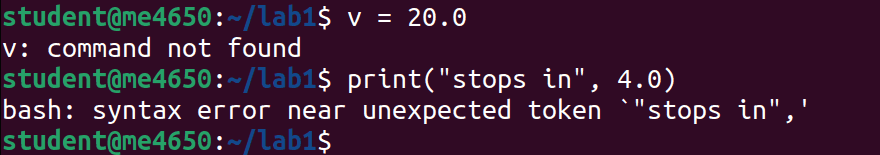
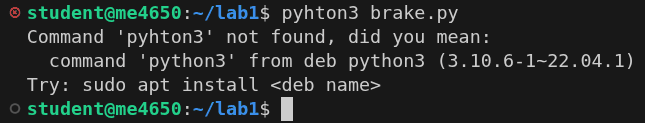
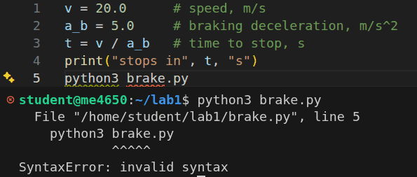
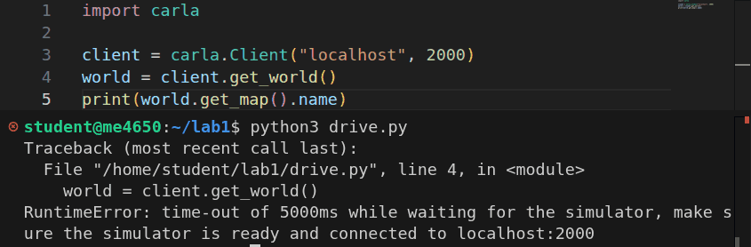
carla____________________________One bug at a time: show it, take answers, click for the fix, click for the next bug. Read the last line of an error first: it says what went wrong; the line above it says where. Error C: VS Code had already drawn a red squiggle under line 5 before it ran. Error D: start CARLA in another terminal, wait for its window, then run the script again. The bugs crawl until you press Stop the bugs; each answer swats a couple of them, and D gets the rest.
What will the car do?
# connected, tick 0.05 s, car spawned
for i in range(50):
car.apply_control(carla.VehicleControl(throttle=1.0))
world.tick()
start = car.get_location() # meters
while car.get_velocity().length() > 0.1:
car.apply_control(carla.VehicleControl(brake=1.0))
world.tick()
print(car.get_location().distance(start))
CARLA works in SI units: meters, seconds, meters per second.
- How long is the throttle on?
- What does the second loop do? When does it end?
- What is printed, in what units?
- It reaches 12.4 m/s, then brakes at a constant 7 m/s². Predict the number: \(d = v_0^2 / (2 a_b)\).
$ python3 what_will_it_do.py 10.77253246307373
The stopping distance at constant deceleration comes from v² = v0² − 2 a_b d with v = 0. Work questions 1 to 4 at the board, then click for what CARLA printed. This is a real CARLA 0.9.16 run of exactly this code: 50 ticks of 0.05 s is 2.5 s of throttle; the car reaches 12.4 m/s; the prediction is 12.4² / 14 = 11.0 m; CARLA prints 10.77 m, 2% shorter. CARLA's stop is close to, but not exactly, constant deceleration: on average 12.4² / (2 × 10.77) = 7.1 m/s².
What you can do now
Tell them what you told them. Each box is one sentence they should be able to say back.
Where we are going: ROS 2
Why ROS 2
- Programs share data on named topicspublish and subscribe
- Add a program, change nothing elsethe logger only listens
- Same code in the simulator and the real caronly where the topics come from changes
- Thousands of ready-made packagessensor drivers, maps, plots
- Record a drive, replay it to testros2 bag
One look ahead, then we stop. AEB is automatic emergency braking. In ROS 2 every program is a node, and nodes share data over named topics: CARLA publishes the radar, the aeb node you will write subscribes to it and publishes brake commands, and CARLA subscribes to those. Click Play: blue dots are radar readings, green dots drive commands, red dots brake commands. aeb brakes when the gap divided by the speed, the time to collision, drops below 1.4 s, and the car stops about 5 m short. This is a drawing with round numbers, not a CARLA run. The logger was added without touching aeb: a publisher does not know who listens. ROS 2 stands for Robot Operating System 2; ours is the Humble release. Topic names follow CARLA 0.9.16's own ROS 2 names for a car called hero. One setup step still uses the API to place the car and its sensors.
Credits
- Screens and videos: the course USB drive (Ubuntu 22.04, VS Code, CARLA 0.9.16, ROS 2 Humble), captured by the course in a virtual machine.
- Restaurant photos, Wikimedia Commons: diners ordering, PattayaPatrol, CC BY-SA 4.0; a waiter with four plates, US Army Africa, CC BY 2.0; cooks at work, Matthias Ripp, CC BY 2.0.
- Terminal icon: Ubuntu's Yaru icon theme, CC BY-SA 4.0. The VS Code icon and the Python logo are trademarks of Microsoft and of the Python Software Foundation, shown to name the software, and are not covered by this lecture's license.
- CARLA images and the worked-example run: rendered and logged by the course in CARLA 0.9.16; CARLA assets are CC BY 4.0.
- Plots made with Matplotlib by the code on their slides (figures/make_figures_1b.py).
- The WMU logo is a registered trademark of Western Michigan University and is not covered by this lecture's license.
- Python, Linux and terminal examples adapted from the Spring 2026 offering.
- © 2027 Zachary D. Asher. The rest of this lecture is licensed CC BY 4.0: reuse it with credit. Its code is Apache-2.0.